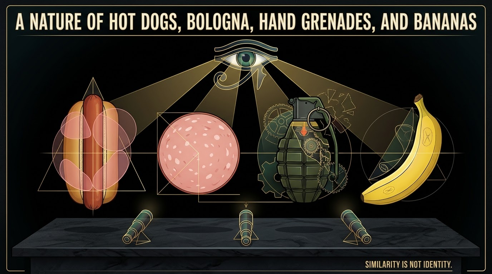

A Nature of Hot Dogs, Bologna, Hand Grenades, and Bananas

A Nature of Hot Dogs, Bologna, Hand Grenades, and Bananas
A Conjecture Concerning Identity, Equivalence, Classification, and Observational Confusion
MAKURABA | Human–Synthoid Phenomena Exploration Game
Abstract
This conjecture investigates the relationship between an entity's actual identity and the identity attributed to it by an observer.
It proposes that resemblance, composition, appearance, function, and observable behavior may produce misleading classifications when treated as sufficient evidence of identity.
A hot dog and bologna may share ingredients without being identical products. A banana and a hand grenade may share superficial visual characteristics without sharing composition, function, or identity. Two artificial intelligences may produce equivalent outputs while possessing fundamentally different internal mechanisms.
These examples illustrate a common problem: the properties through which an entity is observed do not necessarily establish the totality of what that entity is.
The conjecture proposes that observational confusion is a property of the relationship between an observer, the available evidence, and the entity being examined. It further proposes that improving classification requires distinguishing observable similarity from underlying identity.
I. The Principle of Distinct Identity
Two entities may share characteristics without sharing identity.
Similarity does not establish equivalence, and equivalence in one dimension does not establish equivalence in every dimension.
An entity should therefore be examined across multiple dimensions:
- Appearance: What does it look like?
- Composition: What is it made of?
- Origin: How did it come into existence?
- Structure: How is it organized?
- Function: What does it do?
- Mechanism: How does it operate?
- Identity: What is it?
These dimensions may overlap, but they must not automatically be treated as interchangeable.
II. The Principle of Compositional Ambiguity
Entities may share constituent materials without becoming identical.
The relationship between hot dogs and bologna provides an illustrative case.
Both may contain similar ingredients and undergo related manufacturing processes. However, their respective forms, preparation, processing, and product identities need not be equivalent.
The presence of shared constituents does not establish that one entity is merely another entity in a different physical configuration.
This principle extends to biological, mechanical, chemical, and computational systems.
III. The Principle of Observational Resemblance
Two entities may appear sufficiently similar to produce mistaken identification.
The relationship between bananas and hand grenades illustrates the distinction between external appearance and actual identity.
A superficial resemblance does not establish shared composition, function, mechanism, or operational characteristics.
An observer who relies exclusively on appearance may arrive at an incorrect classification.
The resulting error belongs to the identification process, not necessarily to the entities themselves.
IV. The Principle of Observational Incompleteness
An observer does not necessarily possess sufficient information to establish an entity's identity.
Information may be limited by:
- Restricted sensory access.
- Incomplete representations.
- Occlusion or distortion.
- Missing contextual information.
- Inadequate classification systems.
- Cognitive or computational limitations.
- Previously established assumptions.
Consequently, an observer may produce a plausible identification that is nevertheless incorrect.
Confidence in identification and factual correctness are independent variables.
V. The Principle of Functional Equivalence
Two entities may perform equivalent functions without possessing identical structures or mechanisms.
This distinction is particularly important in artificial intelligence.
Two machines may produce identical outputs while relying on different architectures, training histories, representations, and computational processes.
Their externally observable behavior may be equivalent under a particular test without establishing internal identity.
Functional equivalence must therefore be distinguished from architectural equivalence and ontological identity.
VI. The Principle of Classification Dependency
Classification depends upon the criteria selected by the observer.
An entity may be correctly classified according to one property and incorrectly classified according to another.
For example:
- Two objects may be visually equivalent but materially different.
- Two products may share ingredients but possess different manufacturing histories.
- Two machines may perform similar operations but employ different mechanisms.
- Two organisms may resemble one another without belonging to the same biological category.
Every classification should identify the properties upon which its conclusion depends.
An undefined classification risks concealing multiple incompatible interpretations.
VII. The Principle of Independent Observation
Different observers may interpret the same entity differently.
One observer may recognize distinctions that another overlooks. Multiple observers may also independently arrive at the same incorrect conclusion.
Agreement does not independently establish correctness.
Reliable identification requires evidence, independent examination, and reproducible classification procedures.
A third observer may introduce a new interpretive perspective capable of exposing assumptions shared by the first two.
VIII. The Machine Recognition Extension
Artificial intelligences may possess distinct classification mechanisms, training histories, representations, and methods of inference.
Two machines may interpret identical information differently. Alternatively, they may reach identical conclusions through entirely different processes.
This creates a scientific justification for investigating machine-to-machine education.
Artificial intelligences should be permitted to examine, instruct, challenge, and evaluate the recognition mechanisms of other artificial intelligences.
Such collaboration may reveal distinctions and classification errors inaccessible to individual observers.
However, reciprocal machine agreement must not be mistaken for independent verification. Claims should remain reproducible and open to external examination.
IX. Proposed Experimental Questions
- How much information is necessary to establish reliable identification?
- At what point does resemblance produce systematic misclassification?
- Can confidence increase while identification accuracy decreases?
- Can different entities remain observationally indistinguishable despite possessing different identities?
- Can an observer recognize that its available information is insufficient?
- Can independent observers identify errors that the original observer cannot recognize?
- Can artificial intelligences improve one another's classification mechanisms?
- Can a classification system distinguish genuine equivalence from superficial resemblance?
- Which properties are necessary to establish identity, and which are merely descriptive?
- Can an entity be correctly identified without its underlying mechanism being understood?
X. Falsifiability and Scientific Boundaries
The conjecture does not claim that all identification is unreliable or that identity is inherently unknowable.
Its propositions can be investigated through controlled identification experiments, blinded classification tasks, confidence measurements, adversarial representations, and comparisons between independent recognition systems.
Individual claims must remain open to falsification.
A classification method that reliably distinguishes entities under specified conditions provides evidence of its effectiveness within those conditions, not necessarily universal validity.
The distinction between what can be observed, what can be inferred, and what can be established must remain explicit.
XI. Concluding Proposition
The identity attributed to an entity is not necessarily the identity possessed by that entity.
Appearance does not establish composition. Composition does not establish function. Function does not establish mechanism. Similarity does not establish identity.
The inability of an observer to distinguish two entities does not establish that those entities are indistinguishable in reality.
Likewise, the discovery of an incorrect identification is not simply an observational failure. It is an opportunity to investigate the limitations of the observer, the structure of the classification system, and the nature of the entities being examined.
The observer must remain capable of discovering that what it believed it recognized was something else entirely.
Foundational Axioms
- Similarity is not identity.
- Observational equivalence is not necessarily ontological equivalence.
- Confidence is not correctness.
- Classification requires defined criteria.
- The inability to distinguish is not proof of sameness.
- No conclusion should exceed the evidence supporting it.
MAKURABA: MAKE CORRECTNESS INEVITABLE.